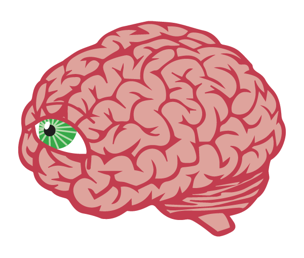
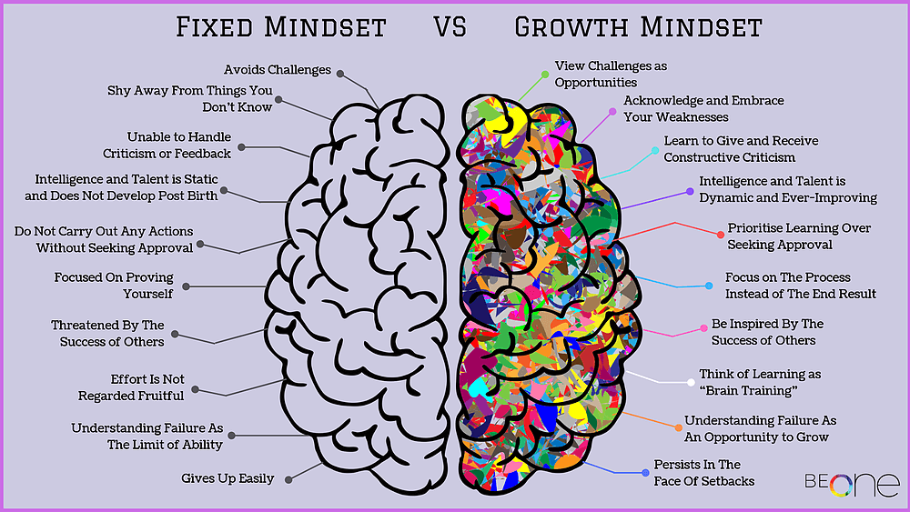

Sprint 4 - Core - Neuroplasticity and Growth Mindset
Neuroplasticity
Imagen neuroplasticity as a highway/motorway within the brain connecting areas of the brain like cities on a map. The more traffic a certain task the more resources go towards the upkeep and expansion of that neural pathway.
We can use the analogy of walking in the snow - the first time you trek a path the snow is soft and crumbles under your foot requiring a lot of energy to move forward – the next time you walk this way you are likely to walk back re-tracing your original footprints, every time getting easier. Our brains work in a very similar way.
Understanding that the mind is looking for the path of least resistance is the key to understanding how habits are formed, both good and bad.
Dopamine

The mind needs feedback to reinforce essential behaviours for survival. The mind ensures activities such as eating, sleeping and social interaction are carried out by rewarding the brain with dopamine.
Dopamine receptors plays an essential role in neuroplasticity and the creation of new pathways. As a pathway gets used more the brain creates new neural connections while other die off, this constant cycle of regeneration and death is neuroplasticity at work.
YouTube - Tour of the Brain - By SentisPhysical and Mental Health of the Brain
One of the easiest ways to improve neuroplasticity is to feed the mind.. literally with good food, exercise, oxygen, sunlight as well as stimulating the mussel and making it work by reading, learning and social interactions.
Self-Image
I am a huge believer in the vision you hold for your self in the minds eye.
“You must find yourself acceptable to “you”. You must have a self that you can trust and believe in. You must have a self that you are not ashamed to “be”. One that you can feel free to express creatively, rather than hide or cover up.”
“When your self-image is adequate and one that you can be wholesomely proud of, you feel self-confident”
“When it is an object of shame, you attempt to hide it rather than express it. Creative expression is blocked. You become hostile and hard to get along with.”
Subconscious Mind
“The so-called subconscious mind is not a “mind at all, but a mechanism- a goal striving ‘servo-mechanism’ consisting of the brain and nervous system, which is used by and directed by the mind.”
“This automatic, goal-striving-machine functions very similarly to the way that electronic servo-mechanisms function”
“This Mechanism within you is impersonal. It will work automatically to achieve goals of success and happiness, or unhappiness and failure, depending on the goals that you yourself set for it.”
Buy now on Fishpond.co.nz
Fixed Mindset Vs Growth Mindset
 YouTube - Growth Mindset vs. Fixed Mindset - By SproutsWhen presented with a problem there are two types of mindset that we can choose to cultivate. Growth Mindset: one that embraces problems as an opportunity to learn OR Fixed Mindset: one that avoids problems often out of fear of failure.
It is possible for us to switch between mindsets rather than dwelling in the past on previous performance we can change our view to accept that learning is a journey we can embark on and learn as we grow.
Setting goals
Setting goals is a great way to help stretch yourself beliefs, aiming high when setting goals pulls us up and beyond our current selves.
Tricking the mind
We must find ways to overcome our ego and fears of embarrassment or failure to attempt something new.
I find that practising the mind trick of imagining yourself as if already or the best version of yourself and then focusing on what it would be like to be that person, is a strong strategy for adopting a growth mindset and eliminating limiting beliefs.
Meditating on that person, feeling what is like to be in their shoes and then convincing your mind to step into those shoes and be that person.